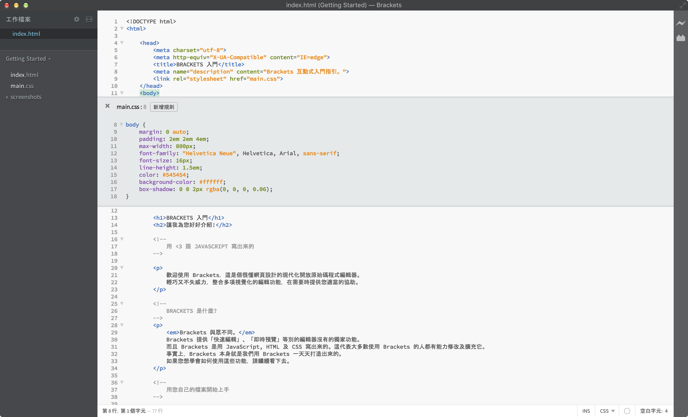

欢迎使用 Brackets，这是一个很懂网页设计的现代化开放源代码编辑器。 轻巧而强大，整合了多项可视化的编辑功能，并在您需要时提供适当的帮助。
作为一个编辑器，Brackets 与众不同。 Brackets 提供“快速编辑”、“实时预览”等独家功能。 Brackets 是用 JavaScript, HTML 及 CSS 写出来的。这代表大多数使用 Brackets 的人都有能力修改及扩展它的功能。 事实上，Brackets 本身就是我们用 Brackets 一步一步打造出来的。 如果您想学会如何使用这些功能，请继续浏览。
只要打开含有您的代码的文件夹，就能使用 Brackets 来编辑。 Brackets 会将目前打开的文件夹视为一个“项目”，包括“代码提示”、“实时预览”及“快速编辑”在内的功能都只会作用于当前项目中的文件。
如果您已经准备好关掉这个示例项目，开始编辑自已的代码，可以使用左侧边栏的下拉菜单切换文件夹。 现在下拉菜单中显示的是“Getting Started”，也就是当前打开的这份文件所在的文件夹。 点击下拉菜单，选择“打开目录…”选项，就能打开您自已的文件夹。 之后您也可以通过同样的下拉菜单切换到打开过的文件夹，包括这个示例项目。频繁切换文件使您分心？编辑 HTML 时，按下 Cmd/Ctrl + E 快捷键打开行内快速编辑器，就能列出所有相关的 CSS 规则。 修改好 CSS 样式后按下 ESC 即可隐藏并返回 HTML 文件继续编辑，当然您也可以让规则继续显示，以供参考。 只要在快速编辑器的外面按下 ESC 键，就能折叠所有行内编辑器。 快速编辑也能找到定义在 LESS 及 SCSS 文件中的规则，包括嵌套规则。
想亲自上手吗? 在编辑器中，把光标移到上方的 标签中，按下 Cmd/Ctrl + E。 您应该就会看到 CSS 快速编辑器出现在上方，显示出所有套用到的 CSS 规则。 快速编辑功能也支持 class 及 id 属性。对于 LESS 或 SCSS 文档也是一样的。 您也可以通过这个方式新建规则。在上方随便一个 标签上点击，按下 Cmd/Ctrl + E。 可以看到它上面并没有任何 CSS 规则，但您可以点击“新 CSS 规则”按钮，就会新建 规则。 您也可以使用这一快捷键编辑其他东西，例如 JavaScript 函数、CSS 颜色、CSS 动画计时函数等，我们仍在持续增加更多的支持。
目前还不能在快速编辑器中嵌套打开更多的快速编辑器，只有光标在主编辑器时才能开启快速编辑功能。
您知道有一种舞蹈，叫做“保存，然后刷新”，我们已经跳了很多年吗？ 简单来说，就是在编辑器中修改一下文件，保存，然后立刻切换到浏览器，按下“刷新”后才能真正的看到结果。 这非常令人不快，使用 Brackets，您不需要再这么“跳舞”了。
Brackets 会与您的浏览器建立一个实时连接，将您对 HTML 及 CSS 内容改动推送至浏览器中！ 您或许已经在浏览器提供的开发者工具中做过类似的事了, 但使用 Brackets，您不需要手动把最终代码从开发者工具中复制并粘贴到编辑器。 您的代码运行在浏览器上，同时也活在编辑器里!
Brackets 让您更容易看到 HTML 及 CSS 的修改会对页面造成什么影响。 当光标停在 CSS 规则上时，Brackets 会在浏览器中将所有会受影响的元素高亮。 编辑 HTML 文件时，Brackets 也会在浏览器中高亮对应的 HTML 元素。
如果您安装了 Google Chrome，现在就可以尝试实时修改。 点击 Brackets 窗口右上角的闪电图标，或是按下 Cmd/Ctrl + Alt + P。 当实时预览功能在 HTML 文件上启用后，所有链接到的 CSS 文件也都可以马上编辑马上生效。 Brackets 与您的浏览器建立连接时，图标会由灰色变为金色。 现在，把光标移到上面的 标签。注意看 Chrome 在图片上显示的蓝色框。 接下来，按下 Cmd/Ctrl + E 打开相关的 CSS 规则定义。 试着将框线 (border) 值由 10px 改成 20px，或将背景色 (background-color) 由透明 "transparent" 改成 "hotpink"。 如果您把 Brackets 与浏览器并排显示，就能看到所有修改都直接反应在浏览器上了。很酷，是不是?!目前 Brackets 只能实时预览 HTML 及 CSS。不过，保存修改过的 JavaScript 文件时也会自动重新载入页面。 我们正在努力让实时预览功能支持 JavaScript。 此外，实时预览现在只能在 Google Chrome 上运行，我们希望将来能支持所有主流的浏览器。
对于那些不记得颜色十六进位值或是 RGB 值的人士，Brackets 可以简单、快速地让您了解当前使用的颜色。 不管是在 CSS 还是在 HTML 中，只要将鼠标光标移到任何颜色值或是渐变色上，Brackets 就会自动显示预览。 对图片也同样有用，在 Brackets 中将鼠标光标移到图片链接上，就会自动显示缩略图。
要尝试快速显示，只需将光标移到这份文件最上方的 标签上，按下 Cmd/Ctrl + E 打开 CSS 快速编辑器，将鼠标光标移到 CSS 上的任何一个颜色值上就能看到。 您也可以在 标签上打开 CSS 快速编辑器，将鼠标移动到任意一个背景图片 (background-image) 值上预览渐变色。 要尝试图片预览，只需要在编辑器中将光标移到本文前述的截图上就能看到。除了 Brackets 内置的这些特色功能外，我们庞大且持续成长的开发者社区已经写出了数百个扩展。 如果您觉得 Brackets 少了什么，可能已经有人为此写好了扩展。 点击 文件 > 扩展管理器...，再点击“可获取”标签，就能浏览或搜索扩展列表。 当您找到想要的扩展，只需点击后面的“安装”按钮即可。
Brackets 项目是开放源代码的。世界各地的网页开发者贡献自己的力量，只为打造出更好的编辑器。 还有不少人正在开发扩展，让 Brackets 更强大。 告诉我们您的想法，分享您的创意，或是直接为项目做点贡献吧。